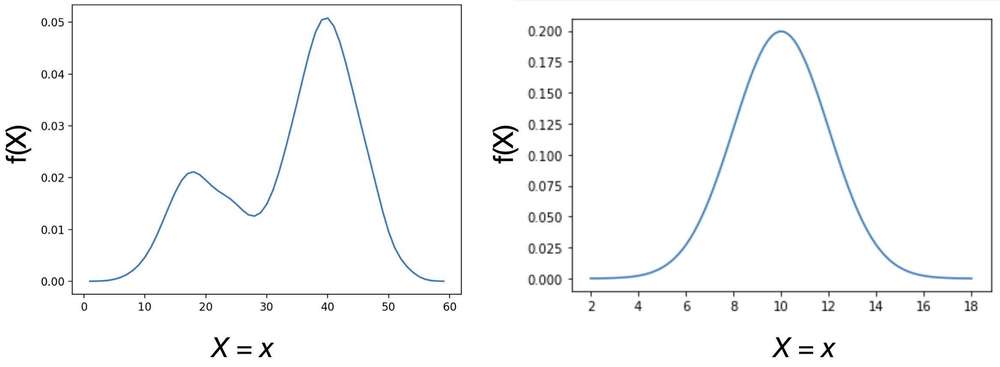
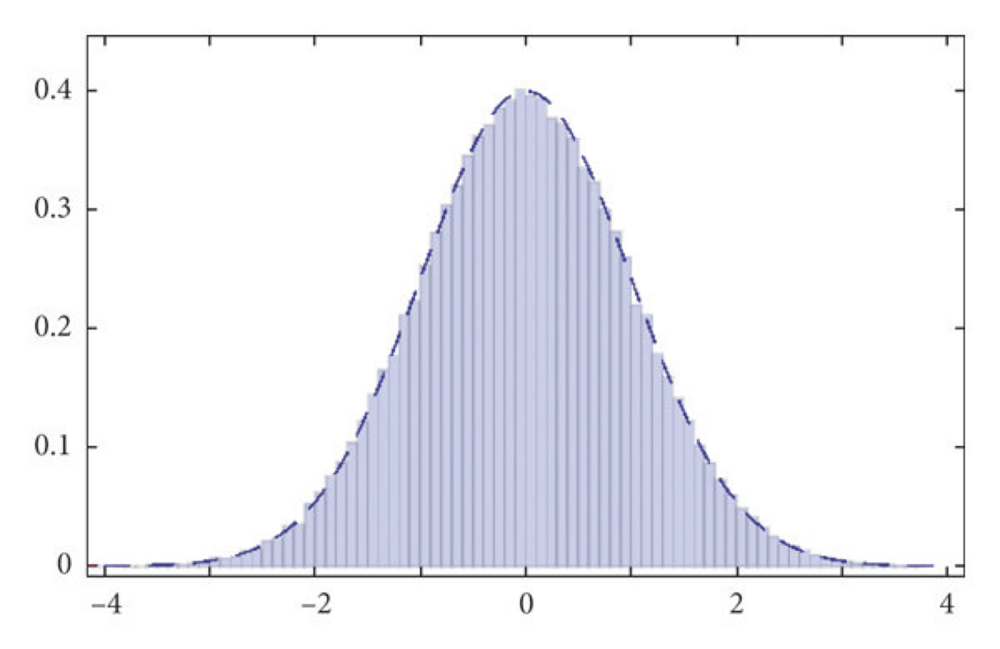
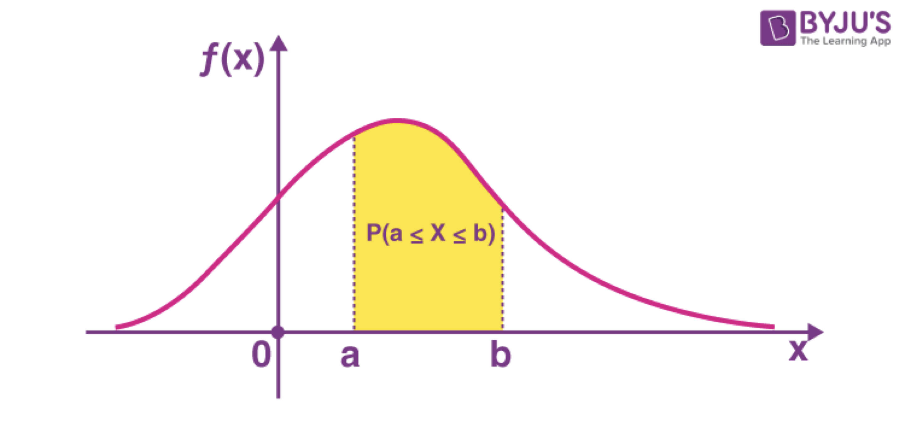
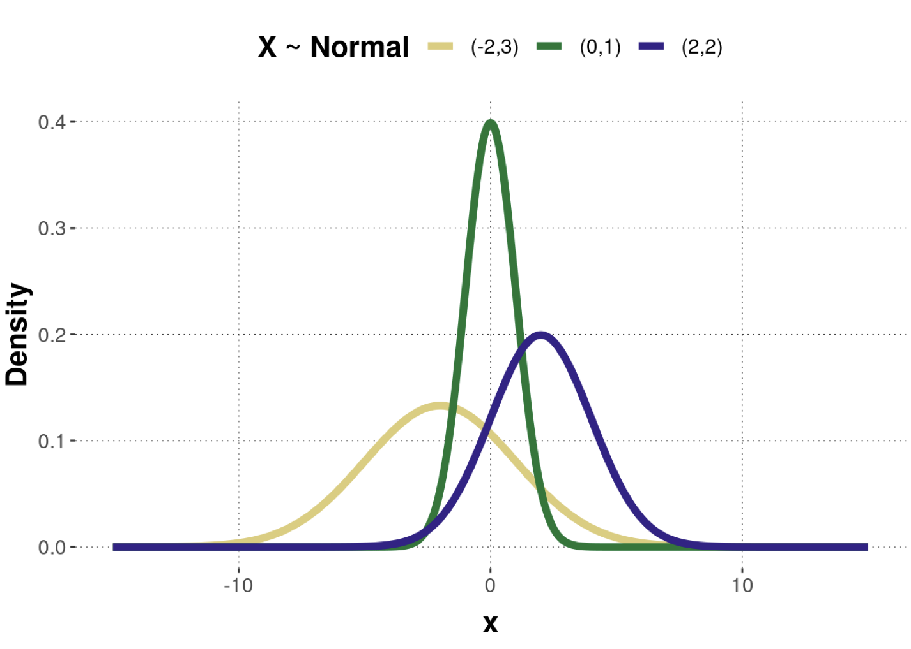
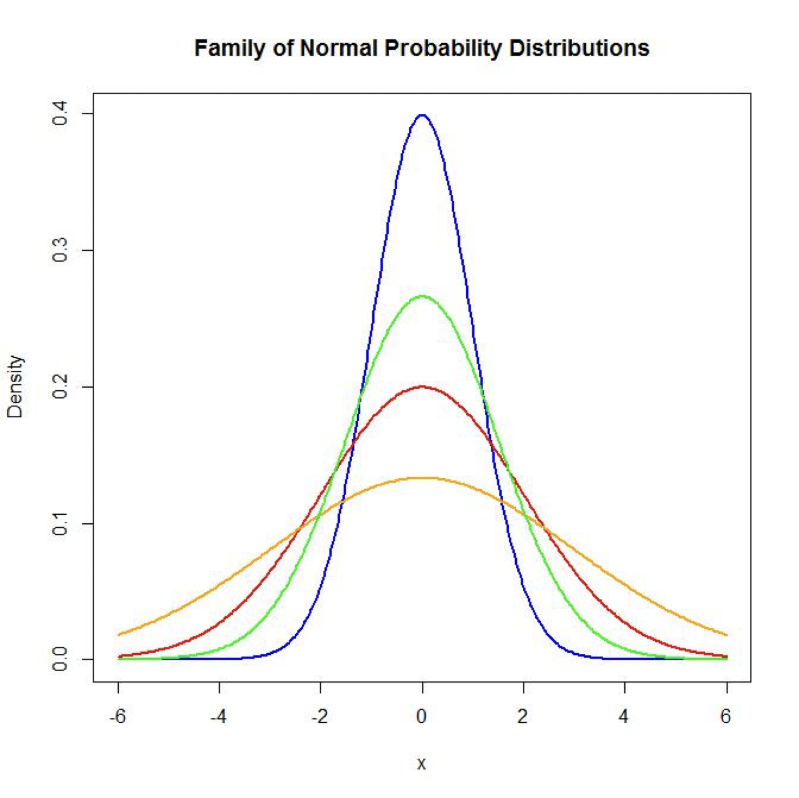
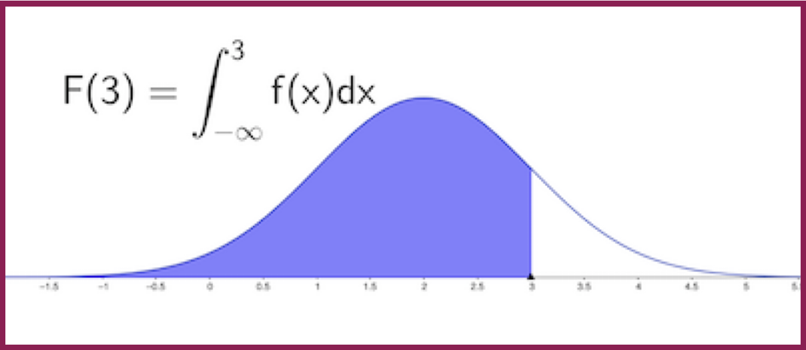
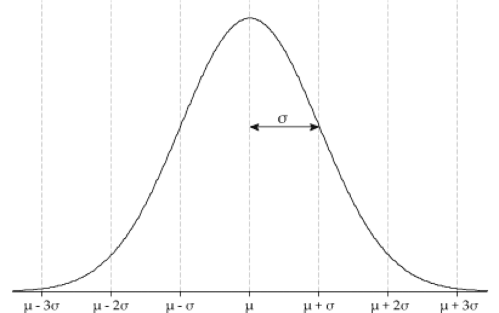
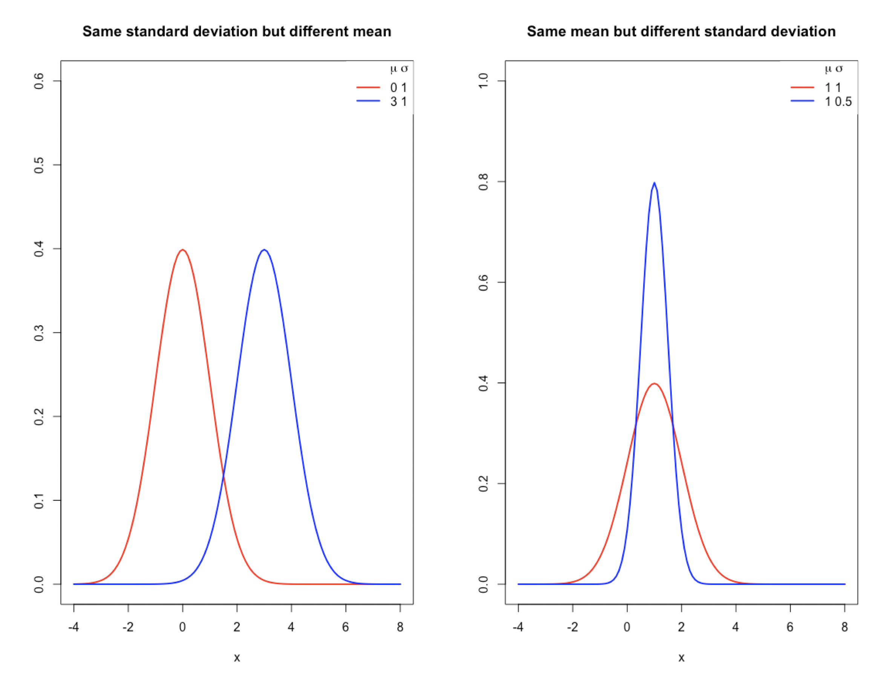
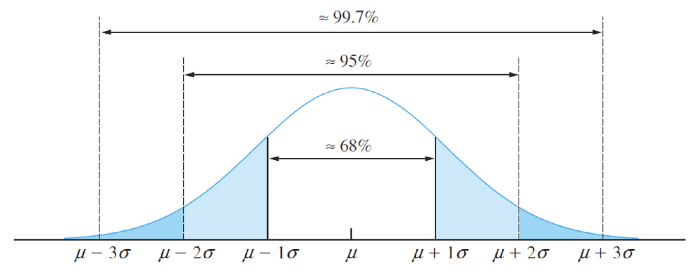
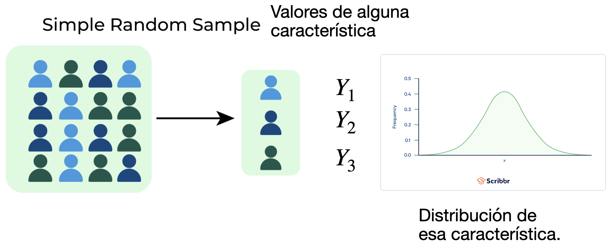

Distribuciones Continuas de Probabilidad
IN2032: Análisis Estadístico de Datos
Agenda
Introducción
Distribución Normal
Teorema del Límite Central
Introducción
Una variable aleatoria es continua si puede tomar un número infinito de valores reales posibles.
Por ejemplo,
La cantidad de lluvia en un área específica.
El rendimiento de un antibiótico en un proceso de fermentación.
La duración de vida de una lavadora.
Función de densidad
Una función importante para variables aleatorias continuas es la función de densidad de probabilidad.
La función de densidad de probabilidad de una variable aleatoria continua \(X\) es la función \(f(x)\) tal que
\(f(x) \geq 0\) para todos los valores de \(x\), \(-\infty < x < \infty.\)
\(\int_{-\infty}^\infty f(x)dx =1.\)
La función de densidad de probabilidad se usa para calcular probabilidades.
Ejemplos de funciones de densidad

Función de densidad como aproximación al histograma de una población

Calculando probabilidades
Considera una variable aleatoria continua \(X\) con función de densidad \(f(x)\). Si \(a\) y \(b\) son dos números (\(a>b\)) entonces
\[P(a\le X \le b)= P(a \le X < b) = P(a<X\le b)= \int _{a}^b f(x) dx.\]
Además
\[P(X\le a)= P(X < a) = \int_{-\infty}^af(x)dx\]
\[P(X\ge a)= P(X > a) = \int_{a}^{\infty}f(x)dx\]
La probabilidad es el [área bajo la curva}{style=“color: red”} creada por \(f(x)\)

Si \(Y\) es una variable aleatoria continua, entonces, para cualquier número \(y_0\),
\[P(Y = y_0) = 0.\]
Dos explicaciones:
El área debajo de la curva y entre \(y_0\) y \(y_0\) no tiene ancho y, por lo tanto, no tiene área. Como la probabilidad es igual al área, la probabilidad es cero.
Si \(Y\) es, digamos, una medida de lluvia diaria, la probabilidad de que sea exactamente 2.193478 pulgadas es cero.
Valor esperado
El promedio teórico o valor esperado de una variable aleatoria continua \(X\) es
\[E(X) = \int_{-\infty}^\infty x f(x)dx\]
Esto es similar al valor esperado de una variable aleatoria discreta.
El valor esperado define la locación del centro de la función de densidad.

La varianza teórica de una variable aleatoria continua \(X\) es
\[V(X) = E\left[ (X - \mu)^2 \right] = \int_{-\infty}^\infty (x-\mu)^2f(x)dx,\]
donde \(\mu = E(X)\).
La desviación estándar de \(X\) es la raíz cuadrada de \(V(X)\).

Define la dispersión de la función de densidad.
Más sobre variables aleatorias continuas
Sea \(X\) una variable aleatoria continua con una función de densidad \(f(x)\).
La función de distribución acumulada de \(X\) es
\[F(x)=P(X\le x)= \int_{-\infty}^xf(t)dt.\]

Distribución Normal
Introducción
La distribución normal (también llamada distribución gaussiana) es la distribución más utilizada en estadística.
La distribución tiene la familiar forma de campana y proporciona un buen modelo para muchas, aunque no todas, las poblaciones continuas.
Aplicaciones:
Diseño experimental.
Control de calidad.
Modelado estadístico.
Distribución Normal
La distribución normal tiene dos parámetros: \(\mu\) y \(\sigma\). Aquí, \(\mu\) puede ser cualquier número y \(\sigma\) puede ser cualquier número positivo.
La función de densidad de probabilidad de una distribución normal con media \(\mu\) y varianza \(\sigma^2\) está dada por
\[f(x)= \frac{1}{\sigma\sqrt{2 \pi}} e^{\frac{-(x-\mu)^2}{2\sigma^2}},\; -\infty<x<\infty.\]
Si \(X\) sigue una distribución normal con media \(\mu\) y varianza \(\sigma^2\), escribimos \(X\sim{N(\mu,\sigma^2)}\).

Media y varianza
Si \(X\sim{N(\mu,\sigma^2)}\), entonces
El promedio teórico de \(X\) es \(\mu\).
La varianza teórica de \(X\) es \(\sigma\).
La desviación estándar teórica de \(X\) es \(\sigma^2\).
Efecto de los parametros
Debemos de pensar en \(N(\mu,\sigma^2)\) como una familia de distribuciones.
Cada miembro de esa familia tiene una combinación de valores para los parámetros \(\mu\) y \(\sigma^2\).
Cada miembro tiene una función de probabilidad diferente.

Encontrar áreas bajo la curva
El calculo de probabilidades usando la distribución normal necesita la integral de la función de densidad normal.
Sin embargo, esta integral no tiene una solución en forma cerrada.
En lugar de eso, se usan algoritmos de aproximación para realizar los cálculos.
En la práctica, los calculos de probabilidades se hacen usando software estadístico como Minitab, JMP, R, o Python.
Cálculo de probabilidades usando Python
Regla Empirica

Considera una población que sigue una distribución normal con media \(\mu\) y desviación estándar \(\sigma\). Toma en cuenta que la curva es simétrica con respecto a \(\mu\).
Alrededor del 68% de la población se encuentra en el intervalo \([\mu - \sigma, \; \mu + \sigma]\).
Aproximadamente el 95% de la población se encuentra en el intervalo \([\mu - 2\sigma, \; \mu + 2\sigma]\).
Aproximadamente el 99.7% de la población se encuentra en el intervalo \([\mu - 3\sigma, \; \mu + 3\sigma]\).
Unidades estándar
La proporción de una población normal que se encuentra dentro de un número determinado de desviaciones estándar de la media es la misma para cualquier población normal.
Por esta razón, cuando se trata de poblaciones normales, a menudo convertimos las unidades en las que se midieron originalmente los elementos de la población a unidades estándar.
Las unidades estándar indican cuántas desviaciones estándar tiene una observación de la media poblacional.
Distribución Normal Estándar
En general, convertimos a unidades estándar restando la media y dividiéndola por la desviación estándar.
Entonces, si \(X\sim{N(\mu,\sigma^2)}\), la unidad estándar de \(X\) es el siguiente número:
\[Z=\frac{X-\mu}{\sigma}.\]
La distribución de \(Z\) es normal con media 0 y desviación estándar 1. Esta distribución se llama distribución normal estándar.
Probablidades de la distribución normal estándar
Si \(X \sim N(\mu, \sigma^2)\) y \(x_0\) es una constante, tenemos que
\[P(X > x_0) = P \left( \frac{X-\mu}{\sigma} > \frac{x_0-\mu}{\sigma}\right) = P \left( Z > z_0\right),\]
donde \(Z \sim N(0, 1)\) y la constante \(z_0 = \frac{x_0-\mu}{\sigma}\) es el valor estandarizado de \(x_0\).
Lo mismo para:
- \(P(X < x_0) = P(Z < z_0)\)
- \(P(x_0 < X < x_1) = P(z_0 < Z < z_1)\) donde \(z_1 = \frac{x_1-\mu}{\sigma}\).
Propiedades de la distribución normal
- Si \(X\sim{N(\mu,\sigma^2)}\) y tenemos las constantes \(a \neq 0\) y \(b\). Entonces
\[aX + b \sim N(a \mu + b, a^2 \sigma^2)\]
- Si \(X\) y \(Y\) son variables aleatorias independentes con \(X\sim{N(\mu_X,\sigma^2_X)}\) y \(Y\sim{N(\mu_Y,\sigma^2_Y)}\). Entonces
\[X+ Y \sim N(\mu_X + \mu_Y, \sigma^2_X + \sigma^2_Y)\]
\[X - Y \sim N(\mu_X - \mu_Y, \sigma^2_X + \sigma^2_Y)\]
- Si \(X_1, X_2, \ldots, X_n\) son variables aleatorias independentes y que siguen una distribución normal con media \(\mu\) y varianza \(\sigma^2\). Entonces,
\[\bar{X} =\sum_{i=1}^{n} \frac{X_i}{n} \sim N\left(\mu,\; \frac{\sigma^2}{n}\right)\]
Teorema del Límite Central
Muestra aleatoria
Consideremos una muestra de \(n\) observaciones seleccionadas aleatoriamente de una población.
En estadística, los valores de esas observaciones se consideran variables aleatorias.
Usamos \(Y_i\) para la i-ésima observación y tenemos \(n\) de ellas, \(Y_1, \ldots, Y_n\).
Se dice que todas las \(Y_i\)’s sigue una misma distribución específica. Además, asumimos que todas ellas son independientes.

Motivación
En muchas aplicaciónes, el resumen estadístico más importante es el promedio:
\[\bar{Y} = \frac{\sum_{i=1}^n Y_i}{n} = \frac{Y_1 + Y_2 + \cdots + Y_n}{n}\]
El teorema del limite central nos permite aproximar la distribución de \(\bar{Y}\) sin importar la distribución de los valores individuales \(Y_i\).
Teórema del límite central
Si \(Y_1, \ldots, Y_n\) es una muestra aleatoria que sigue una distribución con un promedio teórico \(\mu\) y una varianza teórica \(\sigma^2\), entonces …
La distribución de \(\bar{Y} = \frac{\sum_{i=1}^n Y_i}{n}\) converge a una distribución \(N\left(\mu, \frac{\sigma^2}{n}\right)\) cuando el valor de \(n\) es muy grande.
Aproximación a una distribución Binomial
Considera una muestra \(Y_1, Y_2, \ldots, Y_n\) de variables aleatorias Bernoulli con probabilidad \(p\).
Sabemos que el promedio teórico es \(p\) y la varianza teórica es \(p(1-p)\) para una distribución Bernoulli.
Recuerda que si \(X = Y_1 + \cdots + Y_n\), entonces \(X \sim \text{Bin}(n,p)\).
Gracias al teorema del límite central, podemos decir que
- \(X \sim N(n p, np(1-p))\) cuando \(n\) es muy grande.
Esta aproximación a la distribución binomial funciona bien cuando \(n\) es grande y \(p\) no está muy cerca de 0 ni de 1.
De hecho, cuando \(n\) es grande, esta aproximación es la que se utiliza para calcular las probabilidades en una distribución binomial.
\[P(Y = y) = {n \choose y}p^y (1 -p)^{n -y}\]
Esto es debido a que es dificil calcular \({n \choose y}\) en este caso porque sus valores pueden ser muy grandes.
Pregunta de práctica para examen
Los pesos de las langostas de Maine en el momento de su captura se distribuyen normalmente con una media de 1.8 lb y una desviación estándar de 0.25 lb.
¿Cuál es la probabilidad de que una langosta seleccionada al azar pese (a) entre 1.5 y 2 lb?, (b ) más de 1.55 lb?, (c) menos de 2.2 lb?